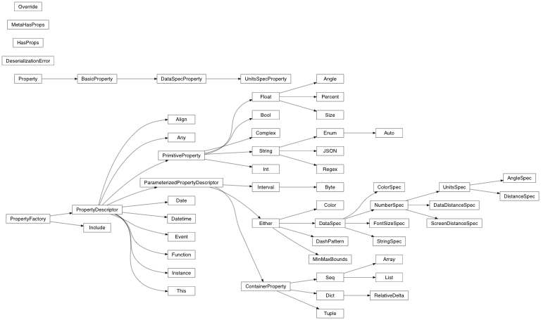

bokeh.core¶
The bokeh.core package contains core facilities for implementing the
Bokeh library.
Note
For those implementing their own custom user-defined models, the bokeh.core.enums and bokeh.core.properties modules may be useful. Otherwise, most of the modules in this package will not be of interest to must users, or be necessary for standard use of the library.
bokeh.core.compat¶
Implement compatibility between Bokeh and Matplotlib.
Currently, compatibility is implemented using the third-party mplexporter library. This library does not provide a full interface to all of Matplotlib functionality, and accordingly Bokeh’s Matplotlib compatibility is limited. A full serialization interface for Matplotlib is being planned in MEP25, and when this work is completed, a much closer and more complete integration will be possible.
bokeh.core.enums¶
Common enumerations to be used together with Enum property.
Typical usage of the enumerations in this module look similar to this:
from bokeh.model import Model
from bokeh.core.enums import StartEnd
from bokeh.core.properties import Enum
class MyModel(Model):
location = Enum(StartEnd, help="""
Whether the thing should be located at the start or the end.
""")
-
class
Enumeration¶ Represent an enumerated collection of values.
-
enumeration(*values, **kwargs)¶ Create an
Enumerationfrom a sequence of values.Parameters: case_sensitive (bool, optional) – Whether validation should consider case or not (default: True) Returns: enum Return type: Enumeration
-
Aggregation= Enumeration(sum, mean, count, nunique, median, min, max)¶ Specify an aggregation type for different charts
-
Anchor= Enumeration(top_left, top_center, top_right, right_center, bottom_right, bottom_center, bottom_left, left_center, center)¶ Specify a fixed location for a Bokeh legend
-
AngleUnits= Enumeration(deg, rad)¶ Specify the units for an angle value
-
ButtonType= Enumeration(default, primary, success, warning, danger, link)¶ Specify a style for button widgets
-
DashPattern= Enumeration(solid, dashed, dotted, dotdash, dashdot)¶ Specify a named dashing patter for stroking lines
-
DateFormat= Enumeration(ATOM, W3C, RFC-3339, ISO-8601, COOKIE, RFC-822, RFC-850, RFC-1036, RFC-1123, RFC-2822, RSS, TICKS, TIMESTAMP)¶ Specify a format for printing dates
-
DatetimeUnits= Enumeration(microseconds, milliseconds, seconds, minsec, minutes, hourmin, hours, days, months, years)¶ Specify a date/time scale
-
Dimension= Enumeration(width, height, x, y)¶ Specify a vertival/horizontal dimension
-
Direction= Enumeration(clock, anticlock)¶ Specify a stroke direction for circles, wedges, etc.
-
FontStyle= Enumeration(normal, italic, bold)¶ Specify the font style for rendering text
-
LegendLocation= Enumeration(top_left, top_center, top_right, right_center, bottom_right, bottom_center, bottom_left, left_center, center)¶ Specify a fixed location for a Bokeh legend
-
LineCap= Enumeration(butt, round, square)¶ Specify how stroked lines should be terminated
-
LineDash= Enumeration(solid, dashed, dotted, dotdash, dashdot)¶ Specify a named dash pattern for stroking lines
-
LineJoin= Enumeration(miter, round, bevel)¶ Specify how stroked lines should be joined together
-
Location= Enumeration(above, below, left, right)¶ Specify a location in plot layouts
-
MapType= Enumeration(satellite, roadmap, terrain, hybrid)¶ Specify a style for a Google map
-
NamedColor= Enumeration(aliceblue, antiquewhite, aqua, aquamarine, azure, beige, bisque, black, blanchedalmond, blue, blueviolet, brown, burlywood, cadetblue, chartreuse, chocolate, coral, cornflowerblue, cornsilk, crimson, cyan, darkblue, darkcyan, darkgoldenrod, darkgray, darkgreen, darkgrey, darkkhaki, darkmagenta, darkolivegreen, darkorange, darkorchid, darkred, darksalmon, darkseagreen, darkslateblue, darkslategray, darkslategrey, darkturquoise, darkviolet, deeppink, deepskyblue, dimgray, dimgrey, dodgerblue, firebrick, floralwhite, forestgreen, fuchsia, gainsboro, ghostwhite, gold, goldenrod, gray, green, greenyellow, grey, honeydew, hotpink, indianred, indigo, ivory, khaki, lavender, lavenderblush, lawngreen, lemonchiffon, lightblue, lightcoral, lightcyan, lightgoldenrodyellow, lightgray, lightgreen, lightgrey, lightpink, lightsalmon, lightseagreen, lightskyblue, lightslategray, lightslategrey, lightsteelblue, lightyellow, lime, limegreen, linen, magenta, maroon, mediumaquamarine, mediumblue, mediumorchid, mediumpurple, mediumseagreen, mediumslateblue, mediumspringgreen, mediumturquoise, mediumvioletred, midnightblue, mintcream, mistyrose, moccasin, navajowhite, navy, oldlace, olive, olivedrab, orange, orangered, orchid, palegoldenrod, palegreen, paleturquoise, palevioletred, papayawhip, peachpuff, peru, pink, plum, powderblue, purple, red, rosybrown, royalblue, saddlebrown, salmon, sandybrown, seagreen, seashell, sienna, silver, skyblue, slateblue, slategray, slategrey, snow, springgreen, steelblue, tan, teal, thistle, tomato, turquoise, violet, wheat, white, whitesmoke, yellow, yellowgreen)¶ Specify one of the 137 named CSS colors
-
NamedIcon= Enumeration(adjust, adn, align-center, align-justify, align-left, align-right, ambulance, anchor, android, angellist, angle-double-down, angle-double-left, angle-double-right, angle-double-up, angle-down, angle-left, angle-right, angle-up, apple, archive, area-chart, arrow-circle-down, arrow-circle-left, arrow-circle-o-down, arrow-circle-o-left, arrow-circle-o-right, arrow-circle-o-up, arrow-circle-right, arrow-circle-up, arrow-down, arrow-left, arrow-right, arrow-up, arrows, arrows-alt, arrows-h, arrows-v, asterisk, at, automobile, backward, ban, bank, bar-chart, bar-chart-o, barcode, bars, beer, behance, behance-square, bell, bell-o, bell-slash, bell-slash-o, bicycle, binoculars, birthday-cake, bitbucket, bitbucket-square, bitcoin, bold, bolt, bomb, book, bookmark, bookmark-o, briefcase, btc, bug, building, building-o, bullhorn, bullseye, bus, cab, calculator, calendar, calendar-o, camera, camera-retro, car, caret-down, caret-left, caret-right, caret-square-o-down, caret-square-o-left, caret-square-o-right, caret-square-o-up, caret-up, cc, cc-amex, cc-discover, cc-mastercard, cc-paypal, cc-stripe, cc-visa, certificate, chain, chain-broken, check, check-circle, check-circle-o, check-square, check-square-o, chevron-circle-down, chevron-circle-left, chevron-circle-right, chevron-circle-up, chevron-down, chevron-left, chevron-right, chevron-up, child, circle, circle-o, circle-o-notch, circle-thin, clipboard, clock-o, close, cloud, cloud-download, cloud-upload, cny, code, code-fork, codepen, coffee, cog, cogs, columns, comment, comment-o, comments, comments-o, compass, compress, copy, copyright, credit-card, crop, crosshairs, css3, cube, cubes, cut, cutlery, dashboard, database, dedent, delicious, desktop, deviantart, digg, dollar, dot-circle-o, download, dribbble, dropbox, drupal, edit, eject, ellipsis-h, ellipsis-v, empire, envelope, envelope-o, envelope-square, eraser, eur, euro, exchange, exclamation, exclamation-circle, exclamation-triangle, expand, external-link, external-link-square, eye, eye-slash, eyedropper, facebook, facebook-square, fast-backward, fast-forward, fax, female, fighter-jet, file, file-archive-o, file-audio-o, file-code-o, file-excel-o, file-image-o, file-movie-o, file-o, file-pdf-o, file-photo-o, file-picture-o, file-powerpoint-o, file-sound-o, file-text, file-text-o, file-video-o, file-word-o, file-zip-o, files-o, film, filter, fire, fire-extinguisher, flag, flag-checkered, flag-o, flash, flask, flickr, floppy-o, folder, folder-o, folder-open, folder-open-o, font, forward, foursquare, frown-o, futbol-o, gamepad, gavel, gbp, ge, gear, gears, gift, git, git-square, github, github-alt, github-square, gittip, glass, globe, google, google-plus, google-plus-square, google-wallet, graduation-cap, group, h-square, hacker-news, hand-o-down, hand-o-left, hand-o-right, hand-o-up, hdd-o, header, headphones, heart, heart-o, history, home, hospital-o, html5, ils, image, inbox, indent, info, info-circle, inr, instagram, institution, ioxhost, italic, joomla, jpy, jsfiddle, key, keyboard-o, krw, language, laptop, lastfm, lastfm-square, leaf, legal, lemon-o, level-down, level-up, life-bouy, life-buoy, life-ring, life-saver, lightbulb-o, line-chart, link, linkedin, linkedin-square, linux, list, list-alt, list-ol, list-ul, location-arrow, lock, long-arrow-down, long-arrow-left, long-arrow-right, long-arrow-up, magic, magnet, mail-forward, mail-reply, mail-reply-all, male, map-marker, maxcdn, meanpath, medkit, meh-o, microphone, microphone-slash, minus, minus-circle, minus-square, minus-square-o, mobile, mobile-phone, money, moon-o, mortar-board, music, navicon, newspaper-o, openid, outdent, pagelines, paint-brush, paper-plane, paper-plane-o, paperclip, paragraph, paste, pause, paw, paypal, pencil, pencil-square, pencil-square-o, phone, phone-square, photo, picture-o, pie-chart, pied-piper, pied-piper-alt, pinterest, pinterest-square, plane, play, play-circle, play-circle-o, plug, plus, plus-circle, plus-square, plus-square-o, power-off, print, puzzle-piece, qq, qrcode, question, question-circle, quote-left, quote-right, ra, random, rebel, recycle, reddit, reddit-square, refresh, remove, renren, reorder, repeat, reply, reply-all, retweet, rmb, road, rocket, rotate-left, rotate-right, rouble, rss, rss-square, rub, ruble, rupee, save, scissors, search, search-minus, search-plus, send, send-o, share, share-alt, share-alt-square, share-square, share-square-o, shekel, sheqel, shield, shopping-cart, sign-in, sign-out, signal, sitemap, skype, slack, sliders, slideshare, smile-o, soccer-ball-o, sort, sort-alpha-asc, sort-alpha-desc, sort-amount-asc, sort-amount-desc, sort-asc, sort-desc, sort-down, sort-numeric-asc, sort-numeric-desc, sort-up, soundcloud, space-shuttle, spinner, spoon, spotify, square, square-o, stack-exchange, stack-overflow, star, star-half, star-half-empty, star-half-full, star-half-o, star-o, steam, steam-square, step-backward, step-forward, stethoscope, stop, strikethrough, stumbleupon, stumbleupon-circle, subscript, suitcase, sun-o, superscript, support, table, tablet, tachometer, tag, tags, tasks, taxi, tencent-weibo, terminal, text-height, text-width, th, th-large, th-list, thumb-tack, thumbs-down, thumbs-o-down, thumbs-o-up, thumbs-up, ticket, times, times-circle, times-circle-o, tint, toggle-down, toggle-left, toggle-off, toggle-on, toggle-right, toggle-up, trash, trash-o, tree, trello, trophy, truck, try, tty, tumblr, tumblr-square, turkish-lira, twitch, twitter, twitter-square, umbrella, underline, undo, university, unlink, unlock, unlock-alt, unsorted, upload, usd, user, user-md, users, video-camera, vimeo-square, vine, vk, volume-down, volume-off, volume-up, warning, wechat, weibo, weixin, wheelchair, wifi, windows, won, wordpress, wrench, xing, xing-square, yahoo, yelp, yen, youtube, youtube-play, youtube-square)¶ Specify the name of an from bokeh.icons
-
NumeralLanguage= Enumeration(be-nl, chs, cs, da-dk, de-ch, de, en, en-gb, es-ES, es, et, fi, fr-CA, fr-ch, fr, hu, it, ja, nl-nl, pl, pt-br, pt-pt, ru, ru-UA, sk, th, tr, uk-UA)¶ Specify a locale for printing numeric values
-
Palette= Enumeration(YlGn3, YlGn4, YlGn5, YlGn6, YlGn7, YlGn8, YlGn9, YlGnBu3, YlGnBu4, YlGnBu5, YlGnBu6, YlGnBu7, YlGnBu8, YlGnBu9, GnBu3, GnBu4, GnBu5, GnBu6, GnBu7, GnBu8, GnBu9, BuGn3, BuGn4, BuGn5, BuGn6, BuGn7, BuGn8, BuGn9, PuBuGn3, PuBuGn4, PuBuGn5, PuBuGn6, PuBuGn7, PuBuGn8, PuBuGn9, PuBu3, PuBu4, PuBu5, PuBu6, PuBu7, PuBu8, PuBu9, BuPu3, BuPu4, BuPu5, BuPu6, BuPu7, BuPu8, BuPu9, RdPu3, RdPu4, RdPu5, RdPu6, RdPu7, RdPu8, RdPu9, PuRd3, PuRd4, PuRd5, PuRd6, PuRd7, PuRd8, PuRd9, OrRd3, OrRd4, OrRd5, OrRd6, OrRd7, OrRd8, OrRd9, YlOrRd3, YlOrRd4, YlOrRd5, YlOrRd6, YlOrRd7, YlOrRd8, YlOrRd9, YlOrBr3, YlOrBr4, YlOrBr5, YlOrBr6, YlOrBr7, YlOrBr8, YlOrBr9, Purples3, Purples4, Purples5, Purples6, Purples7, Purples8, Purples9, Blues3, Blues4, Blues5, Blues6, Blues7, Blues8, Blues9, Greens3, Greens4, Greens5, Greens6, Greens7, Greens8, Greens9, Oranges3, Oranges4, Oranges5, Oranges6, Oranges7, Oranges8, Oranges9, Reds3, Reds4, Reds5, Reds6, Reds7, Reds8, Reds9, Greys3, Greys4, Greys5, Greys6, Greys7, Greys8, Greys9, PuOr3, PuOr4, PuOr5, PuOr6, PuOr7, PuOr8, PuOr9, PuOr10, PuOr11, BrBG3, BrBG4, BrBG5, BrBG6, BrBG7, BrBG8, BrBG9, BrBG10, BrBG11, PRGn3, PRGn4, PRGn5, PRGn6, PRGn7, PRGn8, PRGn9, PRGn10, PRGn11, PiYG3, PiYG4, PiYG5, PiYG6, PiYG7, PiYG8, PiYG9, PiYG10, PiYG11, RdBu3, RdBu4, RdBu5, RdBu6, RdBu7, RdBu8, RdBu9, RdBu10, RdBu11, RdGy3, RdGy4, RdGy5, RdGy6, RdGy7, RdGy8, RdGy9, RdGy10, RdGy11, RdYlBu3, RdYlBu4, RdYlBu5, RdYlBu6, RdYlBu7, RdYlBu8, RdYlBu9, RdYlBu10, RdYlBu11, Spectral3, Spectral4, Spectral5, Spectral6, Spectral7, Spectral8, Spectral9, Spectral10, Spectral11, RdYlGn3, RdYlGn4, RdYlGn5, RdYlGn6, RdYlGn7, RdYlGn8, RdYlGn9, RdYlGn10, RdYlGn11)¶ Specify the name of a palette from bokeh.palettes
-
RenderLevel= Enumeration(image, underlay, glyph, annotation, overlay, tool)¶ Specify a position in the render order for a Bokeh renderer
-
RenderMode= Enumeration(canvas, css)¶ Specify a render mode for renderers that support both Canvas or CSS rendering
-
RoundingFunction= Enumeration(round, nearest, floor, rounddown, ceil, roundup)¶ Specify a policy for how numbers should be rounded
-
ScriptingLanguage= Enumeration(javascript, coffeescript)¶ Specify the language used in a CustomJS callback
-
Side= Enumeration(left, right)¶ Specify a left/right side
-
StartEnd= Enumeration(start, end)¶ Specify a start/end value
-
TextAlign= Enumeration(left, right, center)¶ Specify the horizontal alignment for rendering text
-
TextBaseline= Enumeration(top, middle, bottom, alphabetic, hanging)¶ Specify the baseline location for rendering text
-
Units= Enumeration(screen, data)¶ Specify units for mapping values
bokeh.core.json_encoder¶
Provide a custom JSON encoder for serializing Bokeh models.
-
class
BokehJSONEncoder(skipkeys=False, ensure_ascii=True, check_circular=True, allow_nan=True, sort_keys=False, indent=None, separators=None, default=None)¶ Encode values to be used in Bokeh documents or communicated to a Bokeh server.
-
transform_python_types(obj)¶ Handle special scalars, use default json encoder otherwise
-
-
serialize_json(obj, encoder=<class 'bokeh.core.json_encoder.BokehJSONEncoder'>, **kwargs)¶ Return a serialized JSON representation of a Bokeh model.
bokeh.core.properties¶
In order to streamline and automate the creation and use of models that can for describing plots and scenes, Bokeh provides a collection of properties and property mixins. Property classes provide automatic validation and serialization for a large collection of useful types. Mixin and container classes provide for easy bulk addition of properties to model classes.
Below is the full class inheritance diagram for all standard Bokeh property types. Click on any node to be taken to the corresponding documentation.

Properties are objects that can be assigned as class level attributes on Bokeh models, to provide automatic serialization and validation.
For example, the following defines a model that has integer, string, and list[float] properties:
class Model(HasProps):
foo = Int
bar = String
baz = List(Float)
The properties of this class can be initialized by specifying keyword arguments to the initializer:
m = Model(foo=10, bar="a str", baz=[1,2,3,4])
But also by setting the attributes on an instance:
m.foo = 20
Attempts to set a property to a value of the wrong type will
result in a ValueError exception:
>>> m.foo = 2.3
Traceback (most recent call last):
File "<stdin>", line 1, in <module>
File "/Users/bryan/work/bokeh/bokeh/properties.py", line 585, in __setattr__
super(HasProps, self).__setattr__(name, value)
File "/Users/bryan/work/bokeh/bokeh/properties.py", line 159, in __set__
raise e
File "/Users/bryan/work/bokeh/bokeh/properties.py", line 152, in __set__
self.validate(value)
File "/Users/bryan/work/bokeh/bokeh/properties.py", line 707, in validate
(nice_join([ cls.__name__ for cls in self._underlying_type ]), value, type(value).__name__))
ValueError: expected a value of type int8, int16, int32, int64 or int, got 2.3 of type float
Additionally, properties know how to serialize themselves, to be understood by BokehJS.
-
class
Angle(default=None, help=None, serialized=True)¶ Angle type property.
-
class
AngleSpec(default=None, units_default='rad', help=None)¶ A numeric DataSpec property to represent angles.
Acceptable values for units are
"rad"and"deg".
-
class
Any(default=None, help=None, serialized=True)¶ Any type property accepts any values.
-
class
Array(item_type, default=None, help=None)¶ NumPy array type property.
-
class
BasicProperty(descriptor, name)¶ A PropertyDescriptor associated with a class attribute name, so it can be read and written.
-
class_default(cls)¶ Get the default value for a specific subtype of HasProps, which may not be used for an individual instance.
-
instance_default(obj)¶ Get the default value that will be used for a specific instance.
-
set_from_json(obj, json, models=None)¶ Sets using the result of serializable_value().
-
-
class
Bool(default=None, help=None, serialized=True)¶ Boolean type property.
-
class
Byte(default=0, help=None)¶ Byte type property.
-
class
Color(default=None, help=None)¶ Accepts color definition in a variety of ways, and produces an appropriate serialization of its value for whatever backend.
For colors, because we support named colors and hex values prefaced with a “#”, when we are handed a string value, there is a little interpretation: if the value is one of the 147 SVG named colors or it starts with a “#”, then it is interpreted as a value.
If a 3-tuple is provided, then it is treated as an RGB (0..255). If a 4-tuple is provided, then it is treated as an RGBa (0..255), with alpha as a float between 0 and 1. (This follows the HTML5 Canvas API.)
-
class
ColorSpec(default, help=None)¶ A DataSpec property that can be set to a Color fixed value, or a data source column name referring to column of color data.
-
classmethod
isconst(arg)¶ Returns True if the argument is a literal color. Check for a well-formed hexadecimal color value.
-
classmethod
-
class
Complex(default=None, help=None, serialized=True)¶ Complex floating point type property.
-
class
ContainerProperty(default=None, help=None, serialized=True)¶ Base class for Container-like type properties.
-
class
DashPattern(default=[], help=None)¶ Dash type property.
Express patterns that describe line dashes.
DashPatternvalues can be specified in a variety of ways:- An enum: “solid”, “dashed”, “dotted”, “dotdash”, “dashdot”
- a tuple or list of integers in the HTML5 Canvas dash specification style. Note that if the list of integers has an odd number of elements, then it is duplicated, and that duplicated list becomes the new dash list.
To indicate that dashing is turned off (solid lines), specify the empty list [].
-
class
DataDistanceSpec(default=None, help=None)¶ A numeric DataSpec property to represent data space distances.
Note
Units are always
"data".
-
class
DataSpecProperty(descriptor, name)¶ A Property with a DataSpec descriptor.
-
class
Date(default=datetime.date(2016, 1, 11), help=None)¶ Date (not datetime) type property.
-
class
Datetime(default=datetime.date(2016, 1, 11), help=None)¶ Datetime type property.
-
class
Dict(keys_type, values_type, default={}, help=None)¶ Python dict type property.
If a default value is passed in, then a shallow copy of it will be used for each new use of this property.
-
class
DistanceSpec(default=None, units_default='data', help=None)¶ A numeric DataSpec property to represent screen or data space distances.
Acceptable values for units are
"screen"and"data".
-
class
Either(tp1, tp2, *type_params, **kwargs)¶ Takes a list of valid properties and validates against them in succession.
-
class
Enum(enum, *values, **kwargs)¶ An Enum with a list of allowed values. The first value in the list is the default value, unless a default is provided with the “default” keyword argument.
-
class
Event(default=None, help=None, serialized=True)¶ Event type property.
-
class
Float(default=None, help=None, serialized=True)¶ Floating point type property.
-
class
FontSizeSpec(default, help=None)¶ A DataSpec property that can be set to a font size fixed value, or a data source column name referring to column of font size data.
-
class
Function(default=None, help=None, serialized=True)¶ Function type property.
-
class
HasProps(**properties)¶ Base class for all class types that have Bokeh properties.
-
apply_theme(property_values)¶ Apply a set of theme values which will be used rather than defaults, but will not override application-set values.
The passed-in dictionary may be kept around as-is and shared with other instances to save memory (so neither the caller nor the
HasPropsinstance should modify it).
-
classmethod
dataspecs()¶ Returns a set of the names of this object’s dataspecs (and dataspec subclasses). Traverses the class hierarchy.
-
classmethod
dataspecs_with_props()¶ Returns a dict of dataspec names to dataspec properties.
-
pprint_props(indent=0)¶ Prints the properties of this object, nicely formatted
-
classmethod
properties(with_bases=True)¶ Return a set of the names of this object’s properties. If
with_basesis True, we traverse the class hierarchy and pull together the full list of properties; if False, we only return the properties introduced in the class itself.Parameters: with_bases (bool, optional) – Whether to include properties that haven’t been set. (default: True) Returns: a set of property names
-
classmethod
properties_containers()¶ Returns a list of properties that are containers.
-
classmethod
properties_with_refs()¶ Return a set of the names of this object’s properties that have references. We traverse the class hierarchy and pull together the full list of properties.
-
properties_with_values(include_defaults=True)¶ Return a dict from property names to the current values of those properties.
Non-serializable properties are skipped and property values are in “serialized” format which may be slightly different from the values you would normally read from the properties; the intent of this method is to return the information needed to losslessly reconstitute the object instance.
Parameters: include_defaults (bool, optional) – Whether to include properties that haven’t been set. (default: True) Returns: mapping from property names to their values Return type: dict
-
set(**kwargs)¶ Sets a number of properties at once
-
set_from_json(name, json, models=None)¶ Sets a property of the object using JSON and a dictionary mapping model ids to model instances. The model instances are necessary if the JSON contains references to models.
-
themed_values()¶ Get any theme-provided overrides as a dict from property name to value, or None if no theme overrides any values for this instance.
-
update(**kwargs)¶ Updates the object’s properties from the given keyword args.
-
update_from_json(json_attributes, models=None)¶ Updates the object’s properties from a JSON attributes dictionary.
-
-
class
Include(delegate, help='', use_prefix=True)¶ Include other properties from mixin Models, with a given prefix.
-
class
Instance(instance_type, default=None, help=None)¶ Instance type property, for references to other Models in the object graph.
-
class
Int(default=None, help=None, serialized=True)¶ Signed integer type property.
-
class
Interval(interval_type, start, end, default=None, help=None)¶ Range type property ensures values are contained inside a given interval.
-
class
JSON(default=None, help=None, serialized=True)¶ JSON type property validates that text values are valid JSON.
Note
The string is transmitted and received by BokehJS as a string containing JSON content. i.e., you must use
JSON.parseto unpack the value into a JavaScript hash.
-
class
List(item_type, default=[], help=None)¶ Python list type property.
-
class
MinMaxBounds(accept_datetime=False, default='auto', help=None)¶ Accepts min and max bounds for use with Ranges.
Bounds are provided as a tuple of
(min, max)so regardless of whether your range is increasing or decreasing, the first item should be the minimum value of the range and the second item should be the maximum. Setting min > max will result in aValueError.Setting bounds to None will allow your plot to pan/zoom as far as you want. If you only want to constrain one end of the plot, you can set min or max to
Nonee.g.DataRange1d(bounds=(None, 12))
-
class
NumberSpec(default=None, help=None)¶ A DataSpec property that can be set to a numeric fixed value, or a data source column name referring to column of numeric data.
-
class
Override(**kwargs)¶ Override aspects of the PropertyDescriptor from a superclass.
-
class
ParameterizedPropertyDescriptor(default=None, help=None, serialized=True)¶ Base class for Properties that have type parameters, e.g.
List(String).
-
class
Percent(default=None, help=None, serialized=True)¶ Percentage type property.
Percents are useful for specifying alphas and coverage and extents; more semantically meaningful than Float(0..1).
-
class
PrimitiveProperty(default=None, help=None, serialized=True)¶ A base class for simple property types.
Subclasses should define a class attribute
_underlying_typethat is a tuple of acceptable type values for the property.
-
class
Property(name)¶ A named attribute that can be read and written.
-
class_default(cls)¶ The default as computed for a certain class, ignoring any per-instance theming.
-
serializable_value(obj)¶ Gets the value as it should be serialized, which differs from the __get__ value occasionally when we allow the __get__ value to appear simpler for developer convenience.
-
set_from_json(obj, json, models)¶ Sets from a JSON value.
-
trigger_if_changed(obj, old)¶ Send a change event if the property’s value is not equal to
old.
-
has_ref¶ True if the property can refer to another HasProps instance.
-
serialized¶ True if the property should be serialized when serializing an object. This would be False for a “virtual” or “convenience” property that duplicates information already available in other properties, for example.
-
-
class
PropertyDescriptor(default=None, help=None, serialized=True)¶ Base class for a description of a property, not associated yet with an attribute name or a class.
-
from_json(json, models=None)¶ Convert from JSON-compatible values (list, dict, number, string, bool, None) into a value for this property.
-
themed_default(cls, name, theme_overrides)¶ The default transformed by prepare_value() and the theme overrides.
-
transform(value)¶ Change the value into the canonical format for this property.
-
validate(value)¶ Check whether we can set this property from this value (called before transform()).
-
serialized¶ True if the property should be serialized when serializing an object. This would be False for a “virtual” or “convenience” property that duplicates information already available in other properties, for example.
-
-
class
PropertyFactory¶ Base class for objects that can generate Property instances.
-
classmethod
autocreate()¶ Called by the metaclass to create a new instance of this descriptor if the user just assigned it to a property without trailing parentheses.
-
make_properties(base_name)¶ Returns a list of Property instances.
-
classmethod
-
class
Regex(regex, default=None, help=None)¶ Regex type property validates that text values match the given regular expression.
-
class
RelativeDelta(default={}, help=None)¶ RelativeDelta type property for time deltas.
-
class
ScreenDistanceSpec(default=None, help=None)¶ A numeric DataSpec property to represent screen distances.
Note
Units are always
"screen".
-
class
Seq(item_type, default=None, help=None)¶ Sequence (list, tuple) type property.
-
class
Size(default=None, help=None, serialized=True)¶ Size type property.
Note
Sizeis equivalent to an unsigned int.
-
class
String(default=None, help=None, serialized=True)¶ String type property.
-
class
StringSpec(default, help=None)¶ A DataSpec property that can be set to a string fixed value, or a data source column name referring to column of string data.
-
class
This(default=None, help=None, serialized=True)¶ A reference to an instance of the class being defined.
-
class
Tuple(tp1, tp2, *type_params, **kwargs)¶ Tuple type property.
-
class
UnitsSpec(default, units_type, units_default, help=None)¶ A numeric DataSpec property with units.
-
class
UnitsSpecProperty(descriptor, name, units_prop)¶ A Property that sets a matching _units property as a side effect.
-
abstract(cls)¶ A phony decorator to mark abstract base classes.
-
field(name)¶ Convenience function do explicitly mark a field specification for a Bokeh model property.
Parameters: name (str) – name of a data source field to reference for a property. Returns: {“field”: name} Return type: dict Note
This function is included for completeness. String values for property specifications are by default interpreted as field names.
-
value(val)¶ Convenience function do explicitly mark a value specification for a Bokeh model property.
Parameters: val (any) – a fixed value to specify for a property. Returns: {“value”: name} Return type: dict Note
String values for property specifications are by default interpreted as field names. This function is especially useful when you want to specify a fixed value with text properties.
Example:
# The following will take text values to render from a data source # column "text_column", but use a fixed value "12pt" for font size p.text("x", "y", text="text_column", text_font_size=value("12pt"), source=source)
bokeh.core.property_containers¶
Provide special versions of list, dict, that can be used for property values.
Mutations to these values are detected, and the properties owning the collection is notified of the changes.
-
class
PropertyValueContainer(*args, **kwargs)¶ A base class for property container classes that support change notifications on mutating operations.
-
class
PropertyValueDict(*args, **kwargs)¶ A dict property value that supports change notifications on mutating opertations.
-
class
PropertyValueList(*args, **kwargs)¶ A list property value that supports change notifications on mutating operations.
-
notify_owner(func)¶ A decorator for mutating methods of property container classes, to notify a the owner that a mutating change has occurred.
bokeh.core.property_mixins¶
-
class
FillProps(**properties)¶ Properties to use when performing fill operations while rendering.
Mirrors the BokehJS
properties.Fillclass.-
fill_alpha¶ property type: fill_alpha:NumberSpec(String, Dict(String, Either(String, Float)), Float)
An alpha value to use to fill paths with.
Acceptable values are floating point numbers between 0 (transparent) and 1 (opaque).
-
fill_color¶ property type: fill_color:ColorSpec(String, Dict(String, Either(String, Color)), Color)
A color to use to fill paths with.
Acceptable values are:
- any of the 147 named CSS colors, e.g
'green','indigo' - an RGB(A) hex value, e.g.,
'#FF0000','#44444444' - a 3-tuple of integers (r,g,b) between 0 and 255
- a 4-tuple of (r,g,b,a) where r,g,b are integers between 0..255 and a is between 0..1
- any of the 147 named CSS colors, e.g
-
-
class
LineProps(**properties)¶ Properties to use when performing stroke operations while rendering.
Mirrors the BokehJS
properties.Lineclass.-
line_alpha¶ property type: line_alpha:NumberSpec(String, Dict(String, Either(String, Float)), Float)
An alpha value to use to stroke paths with.
Acceptable values are floating point numbers between 0 (transparent) and 1 (opaque).
-
line_cap¶ property type: line_cap:Enum(‘butt’, ‘round’, ‘square’)
How path segments should be terminated.
Acceptable values are:
'butt'
'round'
'square'
-
line_color¶ property type: line_color:ColorSpec(String, Dict(String, Either(String, Color)), Color)
A color to use to stroke paths with.
Acceptable values are:
- any of the 147 named CSS colors, e.g
'green','indigo' - an RGB(A) hex value, e.g.,
'#FF0000','#44444444' - a 3-tuple of integers (r,g,b) between 0 and 255
- a 4-tuple of (r,g,b,a) where r,g,b are integers between 0..255 and a is between 0..1
- any of the 147 named CSS colors, e.g
-
line_dash¶ property type: line_dash:DashPattern
How should the line be dashed.
-
line_dash_offset¶ property type: line_dash_offset:Int
The distance into the
line_dash(in pixels) that the pattern should start from.
-
line_join¶ property type: line_join:Enum(‘miter’, ‘round’, ‘bevel’)
How path segments should be joined together.
Acceptable values are:
'miter'
'round'
'bevel'
-
line_width¶ property type: line_width:NumberSpec(String, Dict(String, Either(String, Float)), Float)
Stroke width in units of pixels.
-
-
class
TextProps(**properties)¶ Properties to use when performing text drawing operations while rendering.
Mirrors the BokehJS
properties.Textclass.Note
There is currently only support for filling text. An interface to stroke the outlines of text has not yet been exposed.
-
text_align¶ property type: text_align:Enum(‘left’, ‘right’, ‘center’)
Horizontal anchor point to use when rendering text.
Acceptable values are:
'left''right''center'
-
text_alpha¶ property type: text_alpha:NumberSpec(String, Dict(String, Either(String, Float)), Float)
An alpha value to use to fill text with.
Acceptable values are floating point numbers between 0 (transparent) and 1 (opaque).
-
text_baseline¶ property type: text_baseline:Enum(‘top’, ‘middle’, ‘bottom’, ‘alphabetic’, ‘hanging’)
Vertical anchor point to use when rendering text.
Acceptable values are:
'top''middle''bottom''alphabetic''hanging'
-
text_color¶ property type: text_color:ColorSpec(String, Dict(String, Either(String, Color)), Color)
A color to use to fill text with.
Acceptable values are:
- any of the 147 named CSS colors, e.g
'green','indigo' - an RGB(A) hex value, e.g.,
'#FF0000','#44444444' - a 3-tuple of integers (r,g,b) between 0 and 255
- a 4-tuple of (r,g,b,a) where r,g,b are integers between 0..255 and a is between 0..1
- any of the 147 named CSS colors, e.g
-
text_font¶ property type: text_font:String
Name of a font to use for rendering text, e.g.,
'times','helvetica'.
-
text_font_style¶ property type: text_font_style:Enum(‘normal’, ‘italic’, ‘bold’)
A style to use for rendering text.
Acceptable values are:
'normal'normal text'italic'italic text'bold'bold text
-
bokeh.core.query¶
The query module provides functions for searching Bokeh object graphs for objects that match specified criteria.
Queries are specified as selectors similar to MongoDB style query selectors.
Examples
# find all objects with type "grid"
find(p, {'type': 'grid'})
# find all objects with type "grid" or "axis"
find(p, {OR: [
{'type': 'grid'}, {'type': 'axis'}
]})
# same query, using IN operator
find(p, {'type': {IN: ['grid', 'axis']})
# find all plot objects on the 'left' layout of the Plot
list(find(p, {'layout': 'left'}, {'plot': p}))
# find all subplots in column 0
find(p, {type: 'plot', 'column: 0}, {'gridplot': p})
# find all subplots the last row
find(p, {type: 'plot', 'row': -1}, {'gridplot': p})
-
find(objs, selector, context=None)¶ Query an object and all of its contained references and yield objects that match the given selector.
Parameters: - obj (Model) – object to query
- selector (JSON-like) – query selector See module docs for details
Yields: Model – objects that match the query
Examples:
-
match(obj, selector, context=None)¶ Test whether a particular object matches a given selector.
Parameters: - obj (Model) – object to Test
- selector (JSON-like) – query selector See module docs for details
Returns: True if the object matches, False otherwise
Return type: There are two selector keys that are handled especially. The first is ‘type’, which will do an isinstance check:
>>> from bokeh.plotting import line >>> from bokeh.models import Axis >>> p = line([1,2,3], [4,5,6]) >>> len(list(p.select({'type': Axis}))) 2
There is also a ‘tags’ attribute that Model objects have, that is a list of user-supplied values. The ‘tags’ selector key can be used to query against this list of tags. An object matches if any of the tags in the selector match any of the tags on the object:
>>> from bokeh.plotting import line >>> from bokeh.models import Axis >>> p = line([1,2,3], [4,5,6]) >>> p.tags = ["my plot", 10] >>> len(list(p.select({'tags': "my plot"}))) 1 >>> len(list(p.select({'tags': ["my plot", 10]}))) 1
bokeh.core.state¶
Encapsulate implicit state that is useful for Bokeh plotting APIs.
Generating output for Bokeh plots requires coordinating several things:
Documents- Group together Bokeh models that may be shared between plots (e.g., range or data source objects) into one common namespace.
Resources- Control how JavaScript and CSS for the client library BokehJS are included and used in the generated output.
It is certainly possible to handle the configuration of these objects
manually, and several examples of this can be found in examples/glyphs.
When developing sophisticated applications, it may be necessary or
desirable to work at this level. However, for general use this would
quickly become burdensome. The bokeh.state module provides a State
class that encapsulates these objects and ensures their proper configuration.
-
class
State¶ Manage state related to controlling Bokeh output.
-
document¶ -
a default document to use
-
file¶ dict
default filename, resources, etc. for file output This dictionary has the following form:
{ 'filename' : # filename to use when saving 'resources' : # resources configuration 'title' : # a title for the HTML document }
-
notebook¶ bool
whether to generate notebook output
-
session_id¶ str
a default session ID for Bokeh server output
-
autoadd¶ bool
whether certain functions automatically add roots to the document
-
autosave¶ bool
whether certain functions automatically save the file
-
autopush¶ bool
whether certain functions automatically push to the server
-
output_file(filename, title='Bokeh Plot', autosave=False, mode='cdn', root_dir=None)¶ Output to a standalone HTML file.
Does not change the current Document from curdoc(). File, server, and notebook output may be active at the same time, so this does not clear the effects of output_server() or output_notebook().
Parameters: - filename (str) – a filename for saving the HTML document
- title (str, optional) – a title for the HTML document
- autosave (bool, optional) – whether to automatically save (default: False)
If True, then Bokeh plotting APIs may opt to automatically
save the file more frequently (e.g., after any plotting
command). If False, then the file is only saved upon calling
show()orsave(). - mode (str, optional) – how to include BokehJS (default:
'cdn') One of:'inline','cdn','relative(-dev)'or'absolute(-dev)'. Seebokeh.resources.Resourcesfor more details. - root_dir (str, optional) – root directory to use for ‘absolute’ resources. (default: None)
- value is ignored for other resource types, e.g. INLINE or (This) –
- CDN. –
Warning
This output file will be overwritten on every save, e.g., each time show() or save() is invoked, or any time a Bokeh plotting API causes a save, if
autosaveis True.
-
output_notebook()¶ Generate output in Jupyter/IPython notebook cells.
This does not clear the effects of output_file() or output_server(), it only adds an additional output destination (publishing to IPython Notebook). If output_server() has been called, the notebook output cell will be loaded from a Bokeh server; otherwise, Bokeh publishes HTML to the notebook directly.
Returns: None
-
output_server(session_id='default', url='default', app_path='/', autopush=False)¶ Store Bokeh plots and objects on a Bokeh server.
File, server, and notebook output may be active at the same time, so this does not clear the effects of output_file() or output_notebook(). output_server() changes the behavior of output_notebook(), so the notebook will load output cells from the server rather than receiving them as inline HTML.
Parameters: - session_id (str) – Name of session to push on Bokeh server Any existing session with the same name will be overwritten.
- url (str, optional) – base URL of the Bokeh server (default: “default”) If “default” use the default localhost URL.
- app_path (str, optional) – relative path of the app on the Bokeh server (default: “/”)
- autopush (bool, optional) – whether to automatically push (default: False)
If True, then Bokeh plotting APIs may opt to automatically
push the document more frequently (e.g., after any plotting
command). If False, then the document is only pushed upon calling
show()orpush().
Returns: None
Warning
Calling this function will replace any existing server-side document in the named session.
-
reset()¶ Deactivate all currently active output modes and set curdoc() to a fresh empty Document.
Subsequent calls to show() will not render until a new output mode is activated.
Returns: None
-
server_url¶ Gets the full server URL (including the app path).
-
url¶ Gets the server base URL (not including any app path).
-
bokeh.core.templates¶
The templates module contains Jinja2 templates used by Bokeh embed Bokeh models (e.g. plots, widgets, layouts) in various ways.
-
AUTOLOAD_JS= <Template 'autoload_js.js'>¶ Renders JavaScript code for “autoloading”.
The code automatically and asynchronously loads BokehJS (if necessary) and then replaces the AUTOLOAD_TAG
<script>tag that calls it with the rendered model.Parameters: - elementid (str) – the unique id for the script tag
- websocket_url (str) – path to use to open websocket, or null if we are not using a server
- sessionid (str) – The id of the Bokeh server session to get a document from
- docs_json (dict) – embedded JSON serialization of documents
- js_urls (list) – URLs of JS files making up Bokeh library
- css_urls (list) – CSS urls to inject
-
AUTOLOAD_TAG= <Template 'autoload_tag.html'>¶ Renders
<script>tags that automatically load BokehJS (if necessary) and then renders a Bokeh model or document. The document may be specified as either an embedded doc ID or a server session ID. If a specific model ID is not specified, the entire document will be rendered.Parameters: Note
This script injects a
<div>in place, so must be placed under<body>.
-
CSS_RESOURCES= <Template 'css_resources.html'>¶ Renders HTML that loads Bokeh CSS according to the configuration in a Resources object.
Parameters: - css_files (list[str]) – a list of URIs for CSS files to include
- css_raw (list[str]) – a list of raw CSS snippets to put between
<style>tags
-
DOC_JS= <Template 'doc_js.js'>¶
-
FILE= <Template 'file.html'>¶ Renders Bokeh models into a basic .html file.
Parameters: Users can customize the file output by providing their own Jinja2 template that accepts these same parameters.
-
JS_RESOURCES= <Template 'js_resources.html'>¶ Renders HTML that loads BokehJS JavaScript code and CSS according to the configuration in a Resources object.
Parameters: - js_files (list[str]) – a list of URIs for JS files to include
- js_raw (list[str]) – a list of raw JS snippets to put between
<style>tags
-
NOTEBOOK_LOAD= <Template 'notebook_load.html'>¶ Renders HTML for loading BokehJS JavaScript code and CSS into a Jupyter Notebook according to a Resources object.
Parameters: - plot_resources (str) – typically the output of RESOURCES
- logo_url (str) – URL to Bokeh logo to dispay
- verbose (bool) – whether to display verbose info about BokehJS configuration, etc
- bokeh_version (str) – the current version of Bokeh
- js_info (str) – information about the location, version, etc. of BokehJS code
- css_info (str) – information about the location, version, etc. of BokehJS css
- warnings (list[str]) – a list of warnings to display to user
-
NOTEBOOK_DIV= <Template 'notebook_div.html'>¶ Renders a
divto display a Bokeh model into a Jupyter Notebook.Parameters:
bokeh.core.validation¶
To create a Bokeh visualization, the central task is to assemble a collection model objects from bokeh.plotting into a graph that represents the scene that should be created in the client. It is possible to to this “by hand”, using the model objects directly. However, to make this process easier, Bokeh provides higher level interfaces such as bokeh.plotting and bokeh.plotting for users. These interfaces automate common “assembly” steps, to ensure a Bokeh object graph is created in a consistent, predictable way. However, regardless of what interface is used, it is possible to put Bokeh models together in ways that are incomplete, or that do not make sense in some way.
To assist with diagnosing potential problems, Bokeh performs a validation step when outputting a visualization for display. These errors and warnings are outlined below.
bokeh.core.validation.errors¶
Define standard error codes and messages for Bokeh validation checks.
- 1000 : COLUMN_LENGTHS
- A
ColumnDataSourcehas columns whose lengths are not all the same. - 1001 : BAD_COLUMN_NAME
- A glyph has a property set to a field name that does not correspond to any
column in the
GlyphRenderer‘s data source. - 1002 : MISSING_GLYPH
- A
GlyphRendererhas no glyph configured. - 1003 : NO_SOURCE_FOR_GLYPH
- A
GlyphRendererhas no data source configured. - 1004 : REQUIRED_RANGE
- A
Plotis missing one or more required default ranges (will result in blank plot). - 9999 : EXT
- Indicates that a custom error check has failed.
bokeh.core.validation.warnings¶
Define standard warning codes and messages for Bokeh validation checks.
- 1000 : MISSING_RENDERERS
- A
Plotobject has no renderers configured (will result in a blank plot). - 1001 : NO_DATA_RENDERERS
- A
Plotobject has no data renderers (will result in an empty plot frame). - 1002 : EMPTY_LAYOUT
- A layout model has no children (will result in a blank layout).
- 1003 : MALFORMED_CATEGORY_LABEL
- Category labels cannot contain colons (will result in a blank layout).
- 1004 : BOTH_CHILD_AND_ROOT
- Each component can be rendered in only one place, can’t be both a root and in a layout.
- 9999 : EXT
- Indicates that a custom warning check has failed.
bokeh.core.validation.decorators¶
-
error(code_or_name)¶ Mark a validator method for a Bokeh error condition
Parameters: code_or_name (int or str) – a code from bokeh.validation.errorsor a string label for a custom checkReturns: decorator for Bokeh model methods Return type: callable Examples:
The first example uses a numeric code for a standard error provided in
bokeh.validation.errors. This usage is primarily of interest to Bokeh core developers.from bokeh.validation.errors import REQUIRED_RANGES @error(REQUIRED_RANGES) def _check_no_glyph_renderers(self):
The second example shows how a custom warning check can be implemented by passing an arbitrary string label to the decorator. This usage is primarily of interest to anyone extending Bokeh with their own custom models.
@error("MY_CUSTOM_WARNING") def _check_my_custom_warning(self):
-
warning(code_or_name)¶ Mark a validator method for a Bokeh error condition
Parameters: code_or_name (int or str) – a code from bokeh.validation.errorsor a string label for a custom checkReturns: decorator for Bokeh model methods Return type: callable Examples:
The first example uses a numeric code for a standard warning provided in
bokeh.validation.warnings. This usage is primarily of interest to Bokeh core developers.from bokeh.validation.warnings import NO_DATA_RENDERERS @warning(NO_DATA_RENDERERS) def _check_no_glyph_renderers(self):
The second example shows how a custom warning check can be implemented by passing an arbitrary string label to the decorator. This usage is primarily of interest to anyone extending Bokeh with their own custom models.
@warning("MY_CUSTOM_WARNING") def _check_my_custom_warning(self):